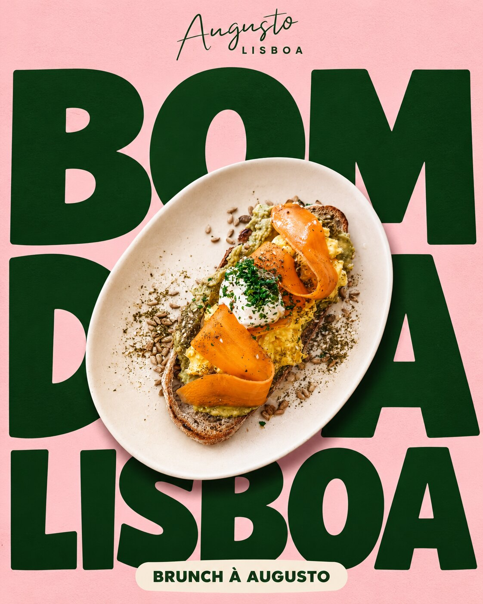
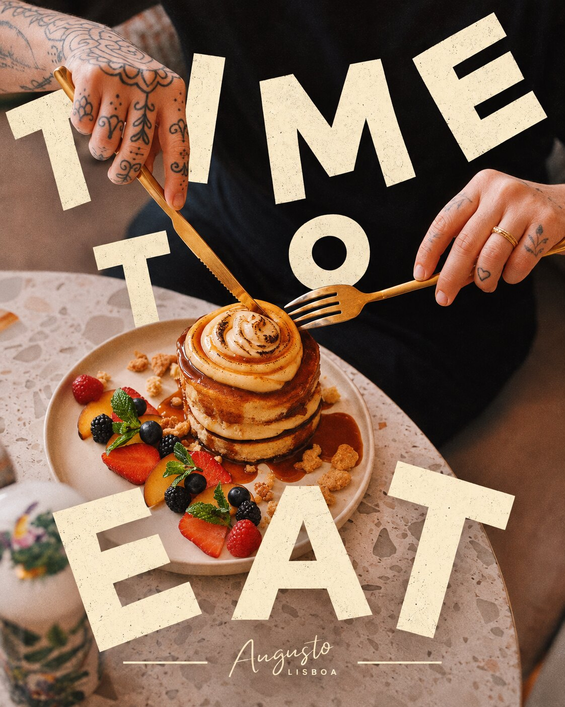
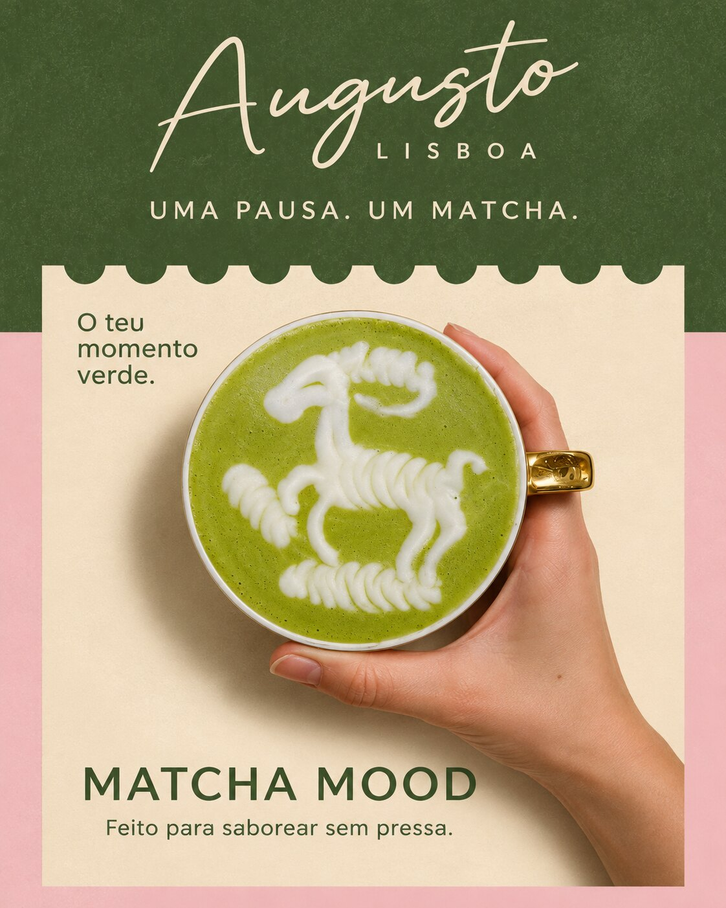
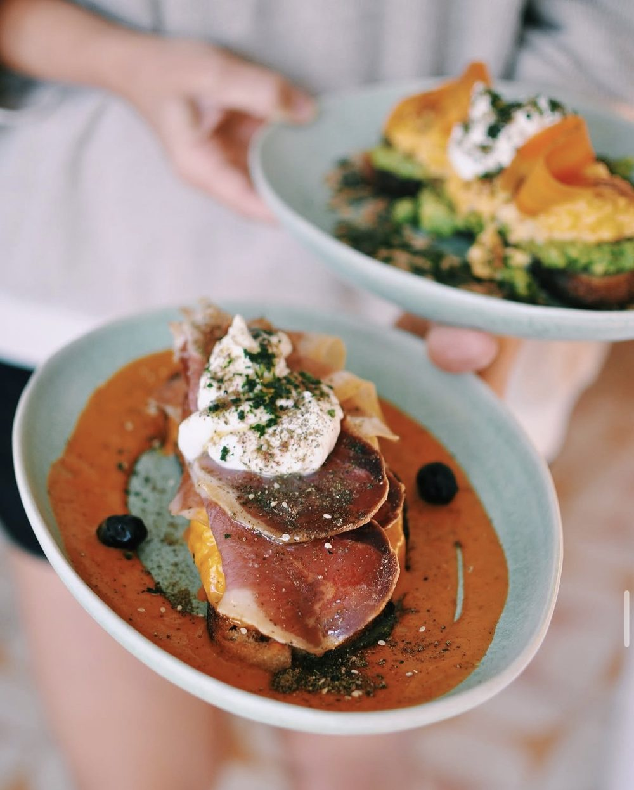
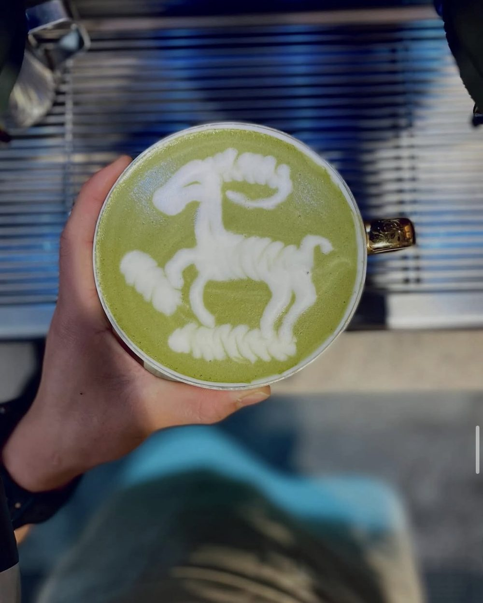
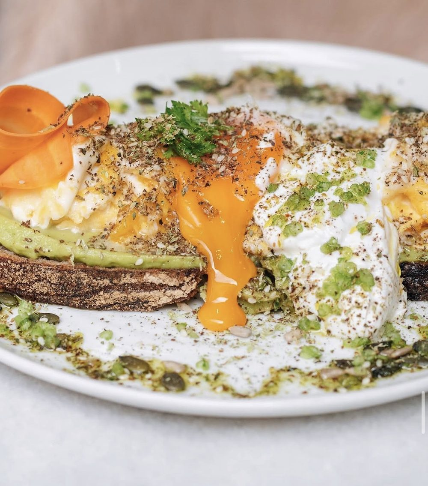
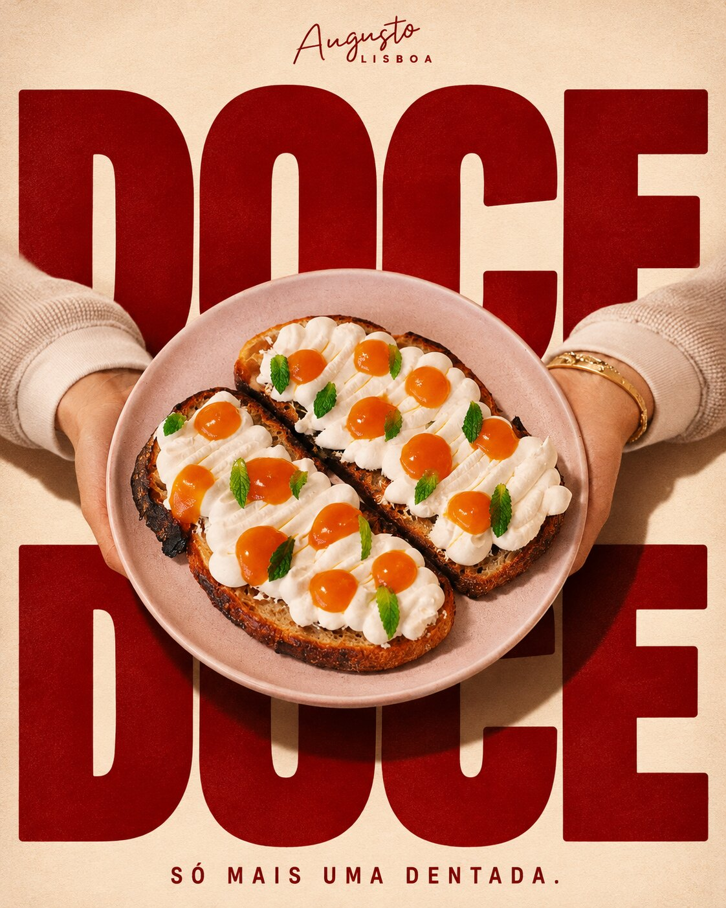
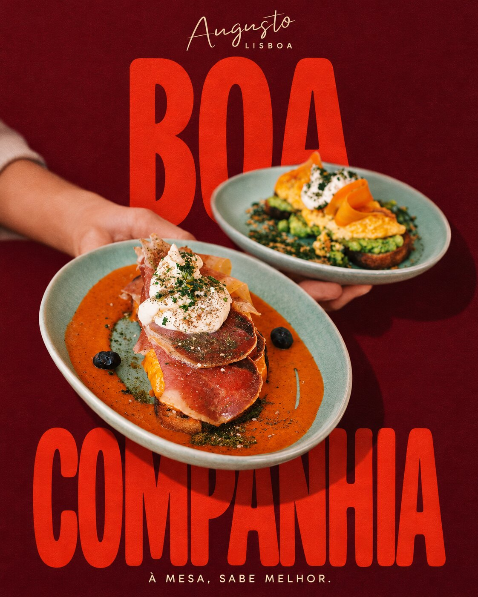

Pão de banana✦Avocado toast✦Peanut butter latte✦Taça de açaí✦Matcha premium✦Café de especialidade✦Pão de banana✦Avocado toast✦Peanut butter latte✦Taça de açaí✦Matcha premium✦Café de especialidade✦



O que sai da cozinha
servido com amor

Difícil de escolher.Avo · Presunto
The vedette.Avocado toast

Organic premium.Matcha
Pancake paradise.Panquecas

A classic, not so classic.Ovo + abacate
Wine lovers, unite.Vinho natural


o nosso
Menu
Brunch completo20,50€
Avocado toast9,50€
Tosta de presunto9,00€
Taça de açaí8,50€
Pão de banana assinatura4,50€
Peanut butter latte4,20€
Matcha premium4,50€
Café de especialidade2,20€
O brunch completo inclui sumo natural, bebida quente, prato principal e um doce da casa. Preços indicativos — confirme no restaurante.